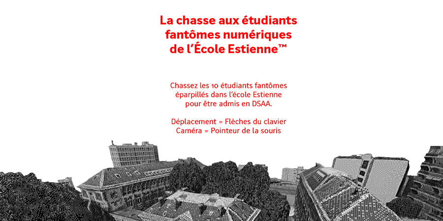
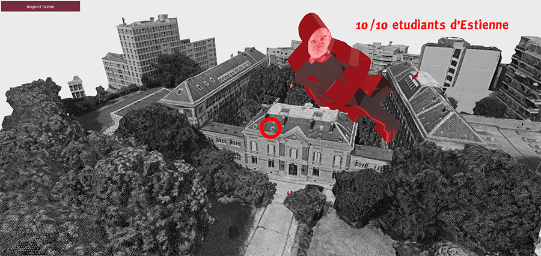

← Back
Ghost Students
#VisualExperience #WebVR #3D
Making a diploma project the old-fashioned way is lame. Catch 10 ghost-students inside a digital replica of École Estienne and graduate
i n s t a n t l y
.
A web-VR adventure in which you explore digitalized landscape. It runs on A-Frame, a ThreeJS wrapper.
Try it here.
 